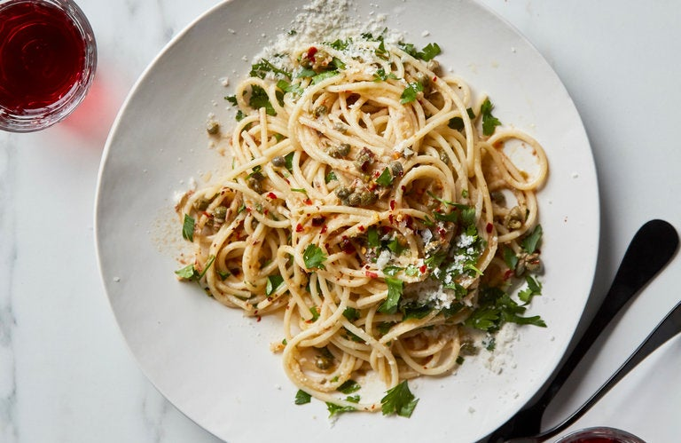

Pasta with garlic, anchovy and capers

Description
Quick dish, makes servings for two people
Cook Time ~30 min
Ingredients
- 8oz. spaghetti
- Salt
- 3 tablespoons extra virgin olive oil
- 4 garlic cloves, peeled and roughly chopped
- 2 tins anchovy filets roughly chopped
- 1 tablespoon capers, rinsed and roughly chopped
- 1/2 teaspoon red pepper flakes, or to taste
- 2 tablespoons chopped parsley, optional
- Parmesan for grating, optional
Steps
- Put the spaghetti in a large pot of well-salted rapidly boiling water and cook only until firmly al dente. (Depending on the brand of pasta, this will be 8 to 10 minutes, but check frequently to see)
- While the pasta is cooking, warm the olive oil in a small skillet over medium heat. Add the garlic and cook for about 1 minute, without letting it brown. Stir in the anchovies, capers and red pepper and cook for a half-minute more, then turn off the heat.
- Drain the pasta and return it to the pot. Pour in the garlic mixture, add the parsley, if using, and toss well to coat. Serve with grated Parmesan if desired.
Back